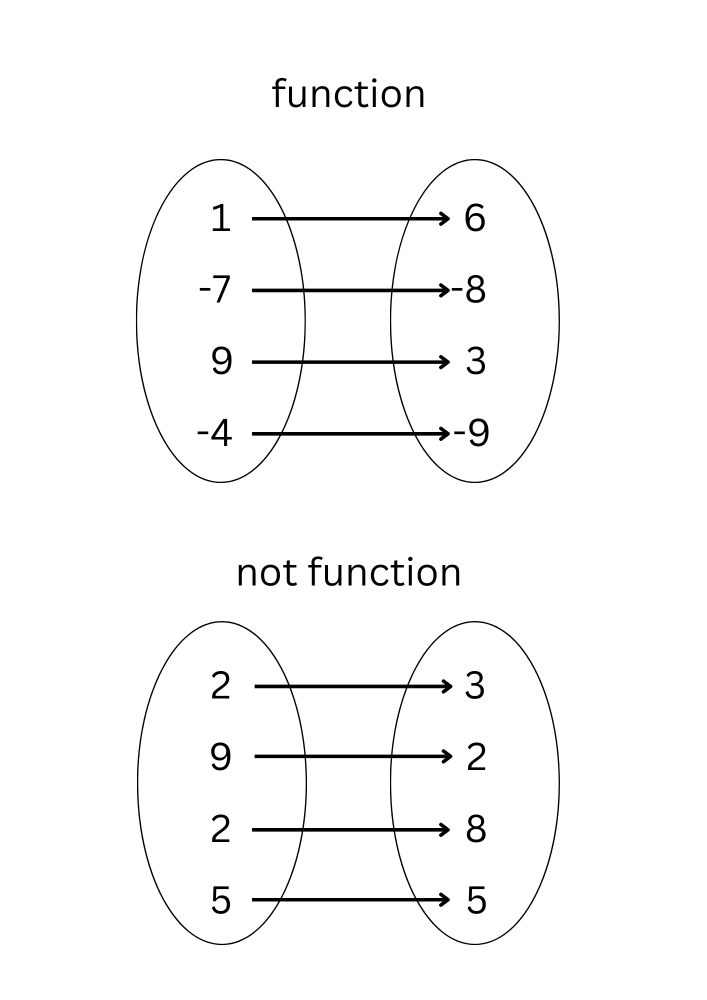

IPT1_ICTMATH_Q2
EXAMPLE USING MAPPING
Meaning and Example

MEANING:
A mapping is a function that is represented by two sets of objects with arrows drawn between them to show the relationships between the objects.
In all mappings, the oval on the left holds values for the domain , and the oval on the right holds values for the range.